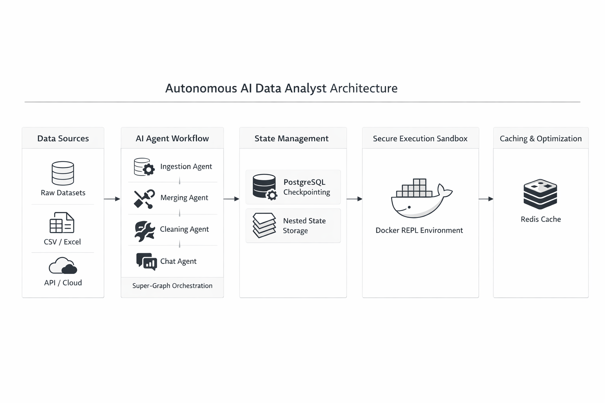
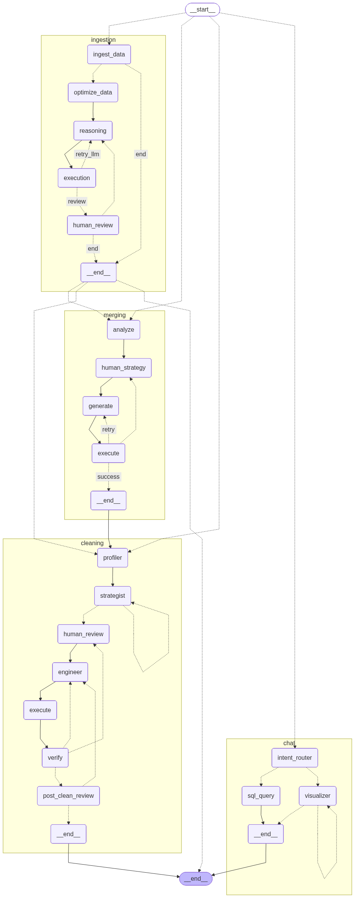
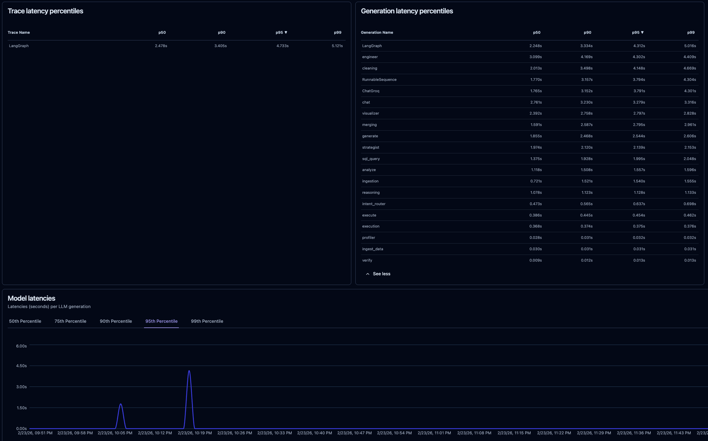
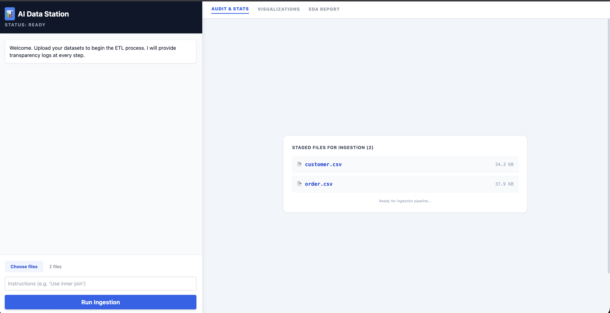

A multi agent AI system that automates ETL, cleaning, analysis with always human in the loop and self correcting capabilities, and allow users to query and clean the data using natural language.
The user ingests raw datasets, the system profiles schema structures, proposes deterministic cleaning strategies, executes transformations securely using sandbox on human approval, and provides conversational SQL and visualization interfaces allowing users to query and clean the data using natural language.

The core workflow is orchestrated using LangGraph as a Super Graph containing independently compiled sub graphs.
All LLM generated code is executed inside an isolated Docker sandbox. Strict timeout controls and file system isolation prevent system level risks.

The system supports Human in the Loop workflows through PostgreSQL based checkpointing using AsyncPostgresSaver. Nested graph states are recursively flattened to allow seamless resumption across stateless HTTP calls.


FastAPI, LangChain, LangGraph, Groq Llama 3 models, Pandas, DuckDB, Docker, PostgreSQL, Redis, Langfuse